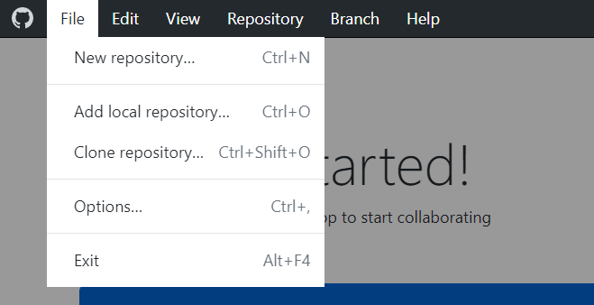
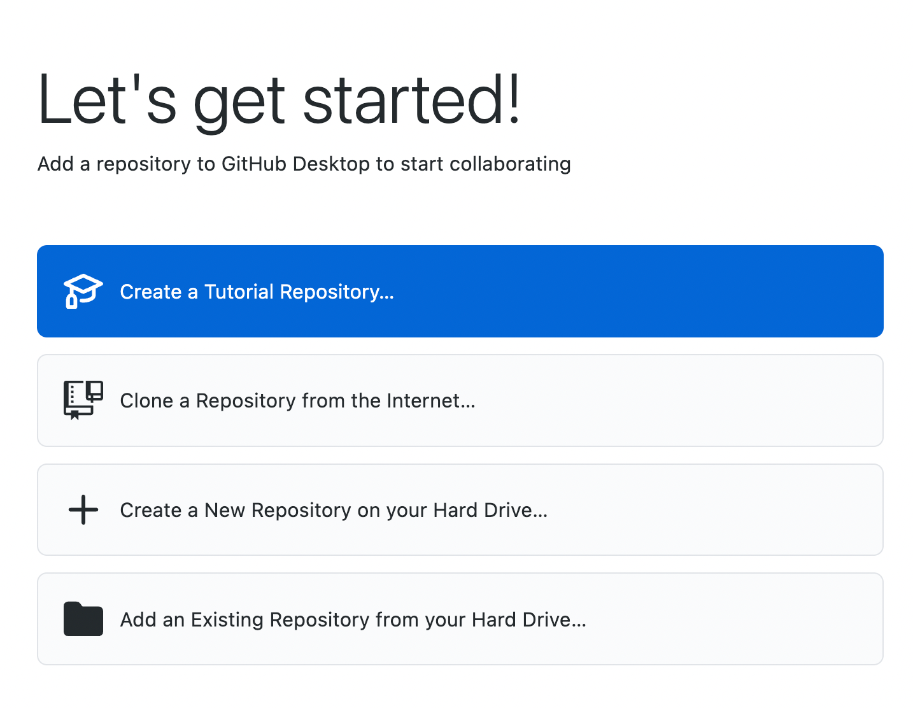
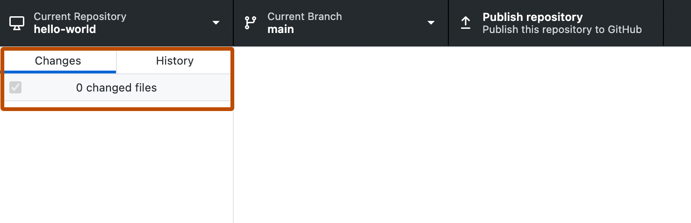
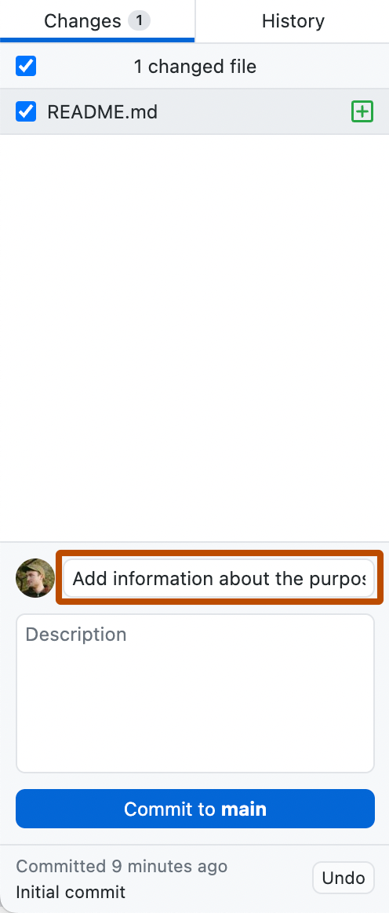
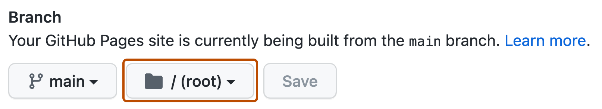

1 準備とOSによる違い
GitHubのアカウントを作成し、メールアドレスを確認します。次に、GitHub Desktopをインストールしてサインインします。HTMLの編集には、VS Codeなどのテキストエディタを使います。
Gitは変更履歴を記録する仕組み、GitHubはそれを保存・共有するサービスです。GitHub Desktopでは、コミットやプッシュを画面上で操作できます。最初の演習は、この方法で進めてかまいません。
| 操作 | Windows | macOS |
|---|---|---|
| アプリの導入 | Windows用のインストーラを実行 | Mac用のアプリをApplicationsへ移動 |
| 設定を開く | File → Options | GitHub Desktop → Settings |
| 作業フォルダを開く | Repository → Show in Explorer | Repository → Show in Finder |
| ファイルの場所 | エクスプローラーで確認 | Finderで確認 |
| GitHub Pagesの設定 | ブラウザでリポジトリの Settings → Pages を開く。基本手順は共通 | |
WindowsのFileメニューの画面例

確認：GitHub Desktopでサインインしたアカウントを確認でき、HTMLを保存する作業フォルダの場所が分かれば、次へ進めます。
2 AIに相談しながら進める
使い方を最初から覚えている必要はありません。目的、OS、使っているアプリ、現在の画面を伝えると、AIに次の操作を相談できます。次の例の角括弧を、自分の状況に置き換えてください。
[Windows／macOS]でGitHub Desktopを使っています。 アプリの版は[分かれば記入]です。 研究紹介ページをGitHub Pagesで公開したいです。 現在は[画面名、表示されているボタンやメッセージ]が表示されています。 ここまでに[試した操作]を行いました。 次の操作を1段階ずつ教えてください。 操作後に何を確認すればよいかも説明してください。 画面が説明と違う場合は、推測で先へ進めず、必要な情報を質問してください。
操作を終えたら、結果をAIに伝え、次の段階を聞きます。画面名やボタンが説明と違うときは、その違いを伝え、必要ならスクリーンショットを見せて相談してください。スクリーンショットは、関係する画面だけを示し、パスワードや非公開の情報を含めないようにします。
AIの説明は、実際の画面と結果に照らして確かめます。変更を破棄する、履歴を取り消すといった操作が提案されたら、何が失われるかを説明してもらい、理解してから実行してください。
3 リポジトリを作る
本文の演習では、自分のGitHubユーザ名.github.ioという名前のリポジトリを作ります。たとえばユーザ名がyournameなら、名前はyourname.github.ioです。
- GitHub Desktopの
File → New Repositoryを開きます。最初の画面ではCreate a New Repository on your Hard Driveからも作れます。 Nameにリポジトリ名を入力し、Local Pathで保存先を確認します。Initialize this repository with a READMEにチェックを付け、Create Repositoryを選びます。Show in ExplorerまたはShow in Finderで作業フォルダを開きます。ここにHTMLを保存します。

同名のリポジトリをすでにGitHubに作っている場合は、新規作成せず、File → Clone Repositoryから複製します。既存のページやファイルを確認してから変更してください。
確認：GitHub Desktopの Current Repository に作業対象の名前が表示され、作業フォルダに README.md があれば、リポジトリを作成できています。
4 HTMLを保存して確認する
- HTMLの骨格を保存し、リポジトリの作業フォルダに
index.htmlとして置きます。AIが作ったHTMLを使う場合も、同じ名前で保存します。 - テキストエディタで開き、氏名、所属、研究内容やリンクを公開してよい情報で書き加えます（AIに各セクションの記述やスタイルを補ってもらってもかまいません）。
- ブラウザで
index.htmlを開き、表示とリンクを確認します。VS CodeのLive Serverを使ってプレビューしてもかまいません。 - 公開前チェックリストで、内容と公開範囲を確認します。
ファイル名が index.html.txt になっていないか確かめてください。Windowsでは、エクスプローラーでファイルの拡張子を表示すると確認しやすくなります。
確認：手元のブラウザで自分の情報が表示され、GitHub Desktopの Changes に index.html が表示されれば、保存先も確認できています。この段階では、まだWebには公開されていません。
5 変更を記録してGitHubへ送る
- GitHub Desktopの
Changesを開き、対象ファイルと差分を読みます。意図しないファイルが含まれていないか確認します。 Summaryに「研究紹介ページの初版を追加」のように変更内容を書き、Commit to mainを選びます。ボタン末尾は現在のブランチ名です。Historyで、今付けたメッセージと変更内容が記録されていることを確認します。- 初回は
Publish repositoryでGitHubへ送ります。GitHub Freeで本章の演習を行う場合は、公開してよいファイルだけを入れ、Keep this code privateを外して公開リポジトリにします。 - GitHub上のリポジトリを開き、
index.htmlがあることを確認します。2回目以降はPush originで送ります。

コミットメッセージを書く画面例


確認：PC内のHistoryとGitHub上のファイルの両方を確認します。GitHubへ送れたことと、Webページを公開できたことは、別の段階です。
6 GitHub Pagesで公開する
以下は、静的HTMLを main ブランチのルートに置く演習です。既存のリポジトリに公開設定がある場合は、その方法に従ってください。
- ブラウザでGitHub上のリポジトリを開き、
Settings → Pagesへ進みます。 Build and deploymentのSourceで、Deploy from a branchを選びます。Branchはmain、フォルダは/(root)を選び、Saveを押します。別のブランチにファイルを置いた場合は、そのブランチを選びます。- 公開処理の完了後、Pagesに表示されたURLを開きます。反映されない場合は、リポジトリの
Actionsで実行中か、エラーが出ているかを確認します。 - 別の端末やシークレットウィンドウでも、表示、画像、リンク、ダウンロードを確認します。


yourname.github.ioというリポジトリのユーザサイトは、https://yourname.github.io/に公開されます。別名のリポジトリで作るプロジェクトサイトは、通常 https://yourname.github.io/リポジトリ名/ です。
確認：提出するのは公開ページのURLです。リポジトリのURL、SettingsのURL、自分のPC内のパスを取り違えないようにしてください。ログインしていない状態でも、他の人がそのURLを開けるか確かめます。
7 公開したページを更新する
別のPCやブラウザで編集した場合は、手元で作業を始める前に Fetch origin でGitHub側の更新を確認します。Pull origin が表示されたら、変更を手元へ取り込みます。同期中にエラーが出たら、表示された内容をAIに伝えて相談してください。
- 手元の
index.htmlの見出しなど、1か所を変更します。 - ローカルで表示を確認し、GitHub Desktopで差分を読みます。
- 「研究テーマの説明を更新」などのメッセージでコミットし、
Push originを選びます。 - 公開処理の完了後、公開URLを開き、変更箇所を確認します。
この公開設定では、同じブランチへ送った変更がWebページへ反映されます。更新のたびにPagesの公開元を設定し直す必要はありません。
確認：Historyに変更理由が残り、公開ページにも変更が反映されれば、更新までひととおり実践できています。
8 うまくいかないとき
| 症状 | 先に確かめること |
|---|---|
| 公開URLが404になる | URL、Pagesの公開元、公開元フォルダの index.html、Actionsの処理結果。 |
| 変更が表示されない | コミットだけで終わっていないか。GitHub上のファイルが更新されたか。公開処理が完了したか。シークレットウィンドウでも同じか。 |
| 画像が出ない | 画像もコミットして送ったか。ファイル名の大文字・小文字と相対パスが合っているか。PC内の絶対パスを指定していないか。 |
| 手順と画面が違う | GitHub DesktopとブラウザのGitHubを取り違えていないか。現在の画面名、OS、アプリの版。 |
| Pagesの設定が使えない | リポジトリの権限、公開範囲、契約プラン。組織のリポジトリなら管理者の設定。 |
原因が分からなければ、次の形でAIや教員に相談してください。現在の状態を確認するところから始めます。
[Windows／macOS]で、[GitHub Desktop／ブラウザのGitHub]を使っています。 目的は[やりたいこと]です。 現在の画面は[画面名]で、[表示されたメッセージ]と出ています。 ここまでに[試した操作]を行いました。 期待した結果は[期待した表示]ですが、実際には[現在の状態]です。 まず、現在の状態を確かめるための操作を1つ教えてください。 必要な画面や情報があれば質問してください。 ファイルの削除、変更の破棄、履歴の取り消しを提案する場合は、影響を先に説明してください。
公開できない事情がある場合は、非公開リポジトリでの記録とローカルプレビューまでを行い、公開しない理由を記録します。
公式資料と画面例の出典
画面例7点：GitHub Docs、© GitHub, Inc. CC BY 4.0。ライセンスに従い、画像は変更せず転載しています。画面例の撮影時期とアプリの版は出典に明示されていません。現在の画面と違う場合は、上の公式資料とAIへの相談例を使って確認してください。